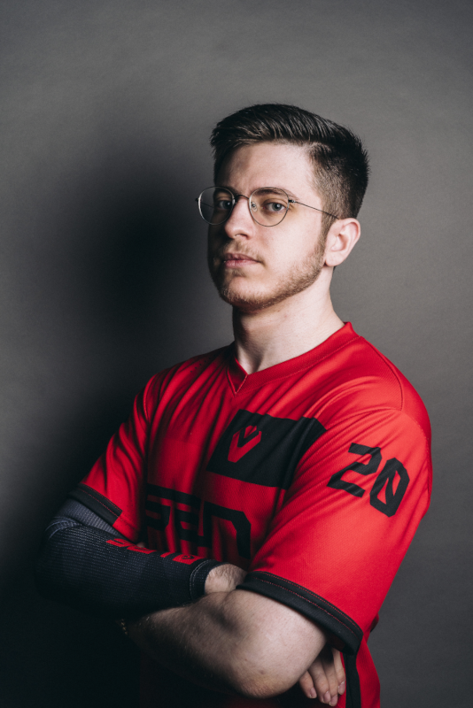

Wer ist zombs?
Jared "zombs" Gitlin wurde am 2. Oktober 1998 geboren und ist ein amerikanischer Esportler.
Derzeit ist er ein inaktiver Spieler in dem Esports Team Sentinels.
Sentinels sind ein Esports Team welches in den Spielen
Valorant und
Apex Legends sehr aktiv ist.
Zombs spielte in beiden derer Teams, sowohl Apex Legends als auch Valorant. Bevor Zombs jedoch zu den Sentinels wechselte
spielte er für viele verschiedene große Teams das Spiel Overwatch.
Seine Karriere
Zombs seine Karriere began mit dem Release des Spiels Overwatch im Oktober 2015.
In diesem "Hero Shooter" fand er schnell spaß und Esports Teams wurden Aufmerksam auf ihn. Eines von denen war
Team Liquid. Neben dem Espotrs verdiente Zombs auch durch das reine spielen von Overwatch Geld,
da er began das Spiel auf Twitch zu streamen.
Im August 2016 wurde Zombs dann von dem Team Faze Clan gesigned. Nach mehreren Jahren aktiven Spielen
wurde Zombs Overwatch zu langweilig und eintönig. Im März 2019 ließ er es dann komplett fallen. Aber er fand etwas besseres, denn genau
nach seiner endeten Overwatch Karriere begann er mit dem spielen von Apex Legends für das Esports Team
Sentinels. Zombs und sein Team brauchten nicht lange um mit Apex Legends erfolgreich zu werden. Jedoch
waren Battle Royal Shooter immer noch nicht das wahre für Zombs. Als dann im April 2020 der FPS (First-Person-Shooter) Valorant
die Bühne betrat wechselte seine Karriere ruckartig. Immer noch unter den Sentinels gründete Zombs zusammen mit den Spielern
Shahzeb "ShahZaM" Khan, Hunter "SicK" Mims und Jay "sinatraa" Won das offizielle Sentinels Valorant Team. Am Ersten Juni 2020 vervollständigten sie ihr Team mit dem
Spieler Micheal "dapr" Gulino. Nach mehreren Siegen in den Worldcups (auch VCT), wie das erreichen des Titels Master 1 und Master 2, begannen die Sentinels nur noch zu
verlieren. Auf Grund dessen entschied sich das Team, im April 2022, zombs auf Stand-By zu setzen.